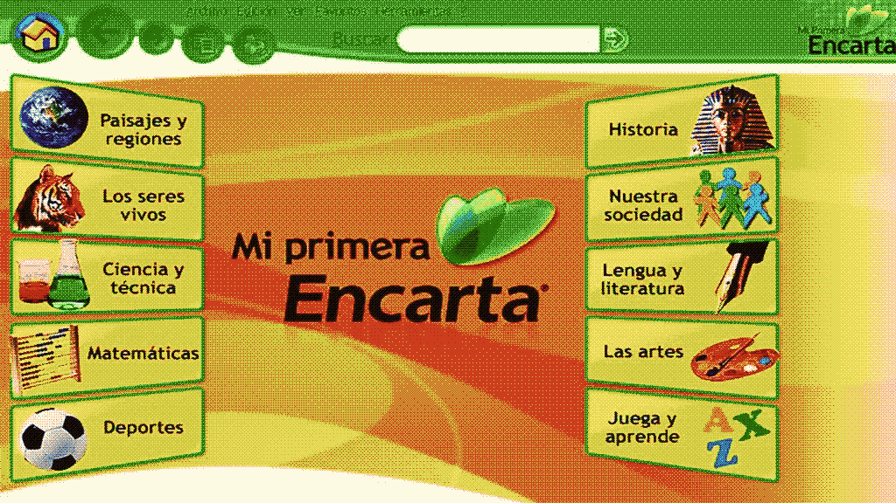
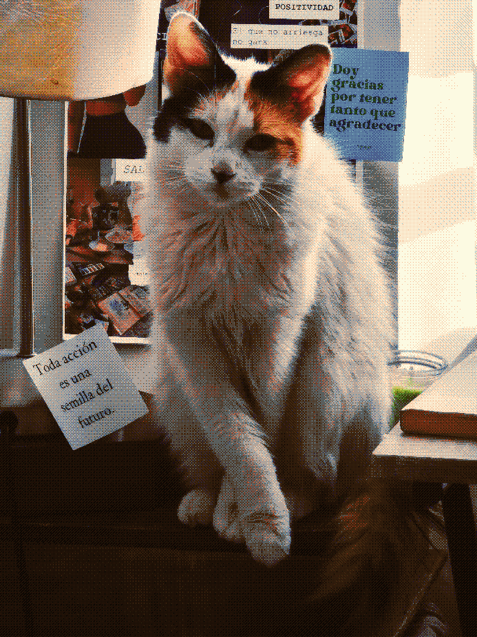
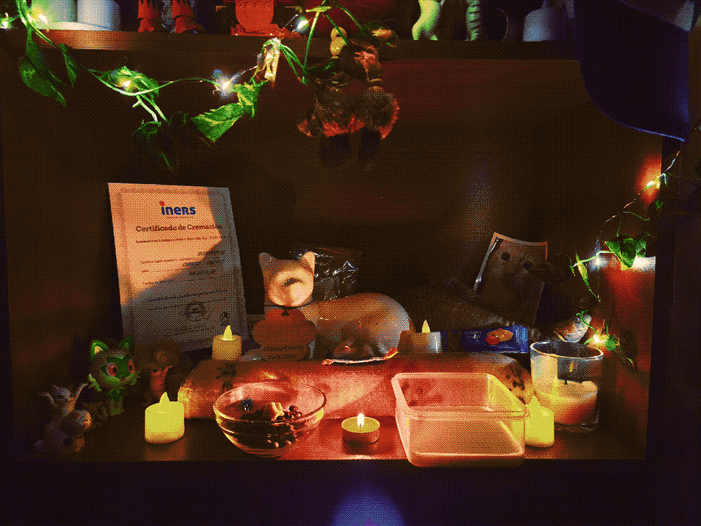

Welcome
nice to meet you, thank you for visiting my personal space.
For me this is a very personal place, when I have time,
I'm inspired or I just want to relax I come here, make a couple of changes,
make some progress and I'm happy.
Feel free to walk around and share with me, if you want to tell me something or leave a message,
below is the chat window, a bit corny, but you can write whatever you want :D
What more do I want to add? 13/06/2025
I'm working on a way to add a music or video player, I would be very excited,
for me windows XP was my childhood and I spent my afternoons prowling through their applications,
playing or just discovering, the internet at that time in chile was not so accessible so many times I spent playing with the encarta haha

What are my hobbies? 13/06/2025
I like to play video games (I will create a space to show you my favorite games, which are soooo many),
listen to all kinds of music, be with my family, and live day to day life.
This is strange for me because many years ago I just wanted to end my life,
but little by little I have learned to love it.... I have found reasons to live a little longer.
here is a picture of my beloved sushi

I will add more stuff soon, thanks for reading me, sorry if my English is not perfect, I'm practicing it :D
What has happened in recent months? 27/10/2025
A few months ago, Chetito, the love of my life, passed away.
I feel like everything around me fell apart. After isolating myself a bit
and focusing only on my work and family so as not to think about my grief,
I am returning to my hobbies and this personal space.
